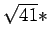
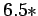
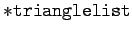
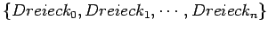
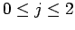
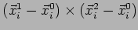

Nächste Seite: trianglelist2teleport Aufwärts: Public member von Fluid Vorherige Seite: Konstruktor Inhalt
void Fluid::trianglelist2boundary(float * trianglelist, unsigned int firsttriangleid, unsigned int lasttriangleid)
Mit dieser Funktion werden lokale Grenzflächen definiert. Die Grenzbedingung wirkt sich particlesize bis
 
Der Rechenaufwand ist nicht proportional zur Anzahl der Dreiecke, sondern zur Fläche der Dreiecke, da diese mit virtuellen Begrenzungspartikeln überzogen werden. Diese Begrenzungspartikel zählen zum maxparticlecount, sind aber bei weitem nicht so zeitraubend in der Berechnung, wie die bewegten Partikel, die die Flüssigkeit darstellen.
Nähere Informationen zu Kontrollpartikeln finden sich auch in Kapitel 3.2.2.
 |
 |
||
 |

zeigt.